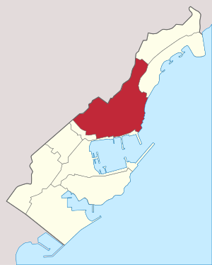
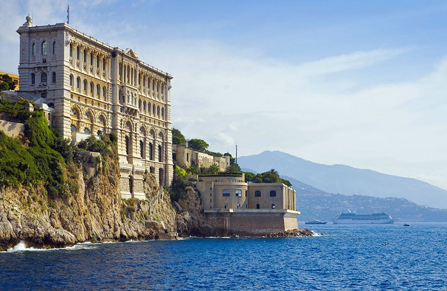
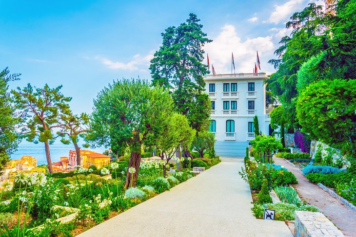

In 1856, Charles III of Monaco granted a concession to Napoleon Langlois and Albert Aubert, to establish a sea-bathing facility for the treatment of various diseases, and to build a German-style casino. St Charles Church, Monte Carlo The initial casino opened in La Condamine in 1862, but was unsuccessful. It relocated several times, before reaching its present location in the "Les Spélugues" (The Caves) area of Monte Carlo. Success came slowly, largely because Monaco was inaccessible from much of Europe. The railway, installed in 1868, brought with it an influx of people, and Monte Carlo grew in wealth. Saint-Charles Church on Monte Carlo's Avenue Sainte-Charles was completed in 1883. It was restored in its centenary year.
Palais du Prince, originally built in the 13th century as a Genoese fortress, the site affords panoramic views, which provided defensive purposes in the Middle Ages. The fortress was renovated throughout the centuries and transformed into a luxurious Louis-XIV-style palace.
Musée Oceanographique, lies in a spectacular location on Le Rocher, almost 90 meters above sea level. In this dramatic setting, the museum and aquariums stand on massive foundations that took 11 years to build. This is one of the world's oldest aquariums, commissioned by Prince Albert I, great grandfather of H.S.H. Prince Albert II, and opened in 1910.
Nouveau Musée National de Monaco, is housed in two separate villas, the Villa Paloma near the Jardin Exotique and the Villa Sauber on Avenue Princess Grace. The museum presents a diverse collection of 19th- and 20th-century artworks including paintings, photographs, theater costumes, models of stage sets, decorative objects, and sculptures.
This forward-thinking museum is also devoted to conservation work, for example the restoration of an antique doll from 1880 and vintage theatrical costumes. The museum encourages dialogue between artists and researchers and promotes learning across artistic, cultural, and scientific disciplines.